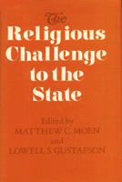

Essays that examine how Islam, Christianity, and Judaism interact with 20th-century state systems
Essays that examine how Islam, Christianity, and Judaism interact with 20th-century state systems


 Essays that examine how Islam, Christianity, and Judaism interact with 20th-century state systems
Essays that examine how Islam, Christianity, and Judaism interact with 20th-century state systems

|  |
The Religious Challenge to the Stateedited by Matthew C. Moen and Lowell S. Gustafsoncloth EAN: 978-0-87722-856-1 (ISBN: 0-87722-856-6) |
"It is one of the few genuine attempts to talk about the relationship between religion and politics in a fashion that transcends individual faiths."
—Jerrold D. Green, Director of the Center for Middle Eastern Studies, University of Arizona, Tucson
Since the late 1970s, transnational religious institutions have begun to reassert their own beliefs, contending that God's law is above state law and challenging states' claims of sovereignty. In turn, states have enforced their authority by establishing government-controlled state religions, by separating religion from politics, or by denying religion's influence over public and private affairs. This collection of original essays systematically examines the way in which three of the world's major monotheistic religions—Islam, Christianity and Judaism—interact with twentieth-century state systems. Focusing on the current trend toward renewed political conflict between religious groups and sovereign states, the authors analyze this interaction in Argentina, Cuba, Mexico, the United States, Eastern Europe, Germany, Israel, Egypt, Islamic Africa, Pakistan, and the Soviet Union.
"This collection belongs to a growing number of studies of religion and culture which, in the spirit of Max Weber, treat religion as an independent variable in historical and social scientific investigation of political and economic affairs. [It is] an informative study of various levels and models of confrontation and cooperation between religious and political orders."
—Lonnie D. Kliever, Professor of Religious Studies, Southern Methodist University
Preface
Part I: Introduction
1. Challenge and Accommodation in Religion and Politics – Lowell S. Gustafson and Matthew C. Moen
Part II: South America and the Caribbean
2. Church and State in Argentina – Lowell S. Gustafson
3. Revolution and Political Religion in Cuba – Dami�n J. Fern�ndez
Part III: North America
4. The Christian Right in the United States – Matthew C. Moen
5. Church-State Relations in Contemporary Mexico, 1968-1988 – Allan Metz
Part IV: Europe
6. Miter Against Missiles: The Papal Challenge to Soviet Regimes in Eastern Europe – Donald E. Bain
7. The Church, the Peace Movement, and the Social Democratic Party of German – Mark Bartholomew
Part V: The Middle East and Islamic Africa
8. Challenge and Conciliation: Religion and State in Israel – Allan Metz
9. The Muslim Brotherhood in Egypt: Reform or Revolution? – Ann M. Lesch
10. Religion and Politics in Islamic Africa – John O. Voll
Part VI: Asia
11. Islam and the State: The Case of Pakistan – Mumtaz Ahmad
12. Religion and Modernization in Gorbachev's Soviet Union: An Indirect Challenge to Secular Authority – James W. Warhola
Contributors
Matthew C. Moen is Assistant Professor of Political Science at the University of Maine.
Lowell S. Gustafson is Assistant Professor Political Science at Villanova University.
Contributors: Mumtaz Ahmad, Mark Bartholomew, Donald E. Bain, Damian J. Femandez, Ann M. Lesch, Allan Metz, John 0. Voll, James W. Warhola, and the editors.
Political Science and Public Policy
Religion
© 2015 Temple University. All Rights Reserved. This page: http://www.temple.edu/tempress/titles/813_reg.html.